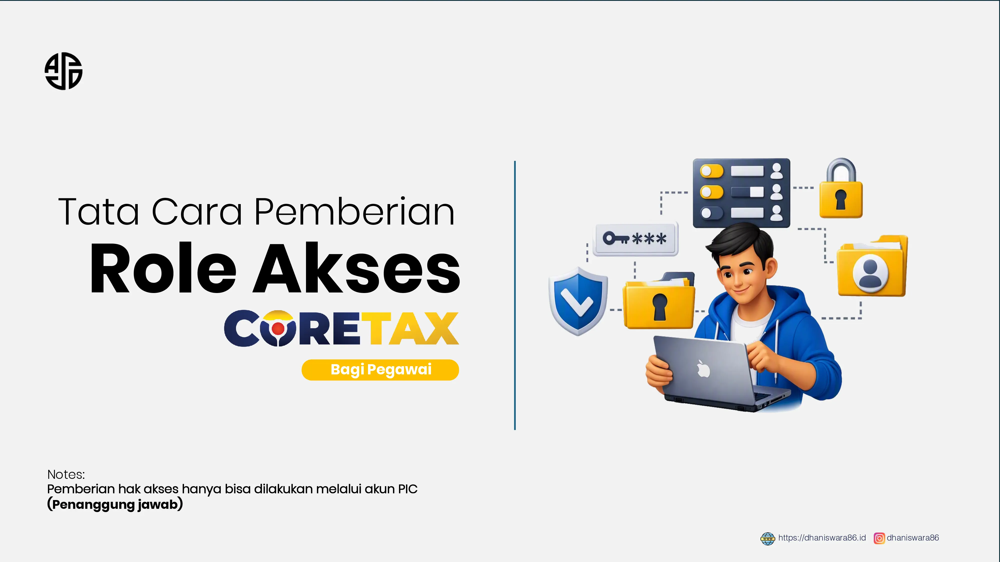

Role akses bukan sekadar menu teknis. Fitur ini membagi kewenangan berdasarkan pengguna, jenis dokumen, tahapan pekerjaan, dan dalam kondisi tertentu lokasi atau tempat kegiatan usaha.
Implementasi Coretax membawa perubahan besar dalam cara perusahaan mengelola kewajiban perpajakannya. Salah satu perubahan yang paling penting adalah hadirnya mekanisme role akses, yaitu pembagian kewenangan kepada setiap pengguna yang menjalankan administrasi perpajakan atas nama Wajib Pajak Badan atau Instansi Pemerintah.
Melalui mekanisme ini, staf pajak, staf keuangan, bagian penggajian, konsultan, hingga pengurus perusahaan tidak harus menggunakan satu akun dan kata sandi secara bersama-sama. Setiap orang masuk menggunakan akun Coretax pribadinya, kemudian menjalankan kewenangan sesuai peran yang telah diberikan.
Konsep tersebut terlihat sederhana. Namun, dalam praktiknya, role akses menjadi salah satu sumber kebingungan yang cukup sering dialami pengguna Coretax. Ada pegawai yang dapat masuk ke akun perusahaan, tetapi tidak menemukan menu yang dibutuhkan. Ada pula pengguna yang berhasil membuat konsep dokumen, tetapi tidak dapat menandatangani atau menyampaikannya.
Untuk memahami permasalahan tersebut, kita perlu mengenal terlebih dahulu cara kerja role akses di Coretax.
Apa yang Dimaksud dengan Role Akses?
Role akses merupakan kewenangan yang diberikan kepada seseorang untuk melakukan aktivitas perpajakan tertentu atas nama Wajib Pajak.
Kewenangan tersebut tidak selalu berlaku untuk seluruh layanan Coretax. Seseorang dapat diberikan akses untuk membuat faktur pajak, tetapi belum tentu dapat membuat bukti potong PPh Pasal 21. Begitu pula seseorang yang dapat menyusun SPT Masa PPN belum tentu mempunyai kewenangan untuk menandatangani dan menyampaikannya.
Dengan kata lain, role akses menjawab dua pertanyaan penting:
Dokumen apa yang boleh dikerjakan oleh pengguna?
Sampai sejauh mana pengguna boleh memproses dokumen tersebut?
Pembatasan ini diperlukan karena setiap pengguna dapat memiliki tanggung jawab yang berbeda di dalam perusahaan.
Mengapa Role Akses Dibutuhkan?
Sebelum penggunaan akses berbasis peran, praktik berbagi akun sering dianggap sebagai cara yang paling mudah. Satu akun perusahaan digunakan oleh beberapa pegawai untuk membuat faktur, bukti potong, dan laporan pajak.
Namun, praktik tersebut menimbulkan sejumlah risiko. Perusahaan menjadi sulit mengetahui siapa yang sebenarnya membuat, mengubah, atau menyampaikan suatu dokumen. Kata sandi perusahaan juga dapat diketahui oleh terlalu banyak orang. Selain itu, pegawai yang sudah berpindah tugas atau keluar dari perusahaan berpotensi masih mempunyai akses terhadap data perpajakan.
Role akses membuat kewenangan pengguna menjadi lebih terstruktur. Perusahaan dapat menentukan siapa yang hanya bertugas menyiapkan dokumen dan siapa yang berwenang memberikan persetujuan akhir.
Role akses bukan sekadar fitur teknis, tetapi juga bagian dari sistem pengendalian internal perusahaan.
Hubungan Role Akses dengan Impersonate
Dalam Coretax, pengguna menjalankan kewajiban perpajakan badan melalui mekanisme yang dikenal sebagai impersonate.
Impersonate bukan berarti menggunakan identitas orang lain secara tidak sah. Dalam konteks Coretax, impersonate berarti pengguna masuk menggunakan akun pribadinya, kemudian beralih untuk bertindak mewakili Wajib Pajak Badan yang telah memberikan kewenangan kepadanya.
Sebagai contoh, seorang staf pajak masuk menggunakan NIK atau NPWP pribadinya. Setelah login, ia memilih perusahaan yang diwakilinya. Menu dan fungsi yang tersedia kemudian mengikuti role yang telah diberikan oleh perusahaan tersebut.
Apabila role yang diterima hanya terbatas pada pembuatan konsep faktur pajak, pengguna hanya dapat mengerjakan fungsi tersebut. Ia tidak otomatis memperoleh akses penuh terhadap seluruh administrasi perpajakan perusahaan.
Mengenal PIC atau Penanggung Jawab
Dalam pengelolaan akses Coretax, terdapat pihak yang memiliki posisi penting, yaitu PIC atau Penanggung Jawab.
PIC pada umumnya mempunyai kewenangan yang lebih luas dalam akun Wajib Pajak Badan. PIC dapat bertindak mewakili badan serta mengelola pihak-pihak yang diberi akses terhadap administrasi perpajakan perusahaan.
Karena kewenangannya luas, penetapan PIC perlu diperhatikan dengan serius. Perusahaan harus memastikan bahwa pihak yang tercatat sebagai PIC memang masih aktif, mempunyai hubungan yang sah dengan badan, dan memahami tanggung jawabnya.
Apabila pengurus yang seharusnya menjadi PIC tidak dapat mengakses akun badan, proses pemberian kewenangan kepada pegawai lain juga dapat terhambat.
Perbedaan Drafter dan Signer
Secara umum, pembagian kewenangan dalam Coretax dapat dipahami melalui dua fungsi utama, yaitu drafter dan signer.
Drafter
Pengguna yang diberi kewenangan untuk menyiapkan atau membuat konsep dokumen perpajakan.
- Mengisi data transaksi.
- Membuat konsep faktur pajak.
- Membuat konsep bukti potong.
- Mengimpor data melalui file XML.
- Menyusun dan melengkapi konsep sebelum disampaikan.
Signer
Pengguna yang diberi kewenangan untuk memberikan persetujuan akhir atas dokumen perpajakan.
- Menandatangani dokumen.
- Menerbitkan atau mengunggah dokumen.
- Menyampaikan laporan perpajakan.
- Memastikan konsep telah diperiksa.
- Memikul tanggung jawab pada tahap akhir proses.
Drafter pada dasarnya tidak selalu mempunyai kewenangan untuk memberikan persetujuan akhir. Inilah sebabnya seorang pegawai dapat berhasil membuat dokumen, tetapi tidak menemukan tombol atau fungsi untuk menandatangani dan menyampaikannya.
Signer bertugas memastikan bahwa dokumen yang telah disusun sudah benar dan layak untuk diproses lebih lanjut. Dalam praktik pengendalian internal, fungsi signer idealnya diberikan kepada pihak yang mempunyai kewenangan dan tanggung jawab lebih tinggi, misalnya supervisor pajak, manajer keuangan, pengurus, atau pihak lain yang ditunjuk perusahaan.
Pemisahan drafter dan signer membuat dokumen tidak langsung disampaikan hanya karena telah selesai dibuat. Dokumen terlebih dahulu diperiksa oleh pihak yang berbeda.
Satu Role Tidak Berlaku untuk Semua Layanan
Salah satu kekeliruan yang sering terjadi adalah menganggap bahwa satu role dapat digunakan untuk seluruh jenis kewajiban perpajakan.
Padahal, role Coretax dapat dibedakan berdasarkan jenis dokumen atau modul. Misalnya, role untuk membuat faktur pajak berbeda dengan role untuk menyusun SPT Masa PPN. Role untuk e-Bupot PPh Pasal 21 juga dapat berbeda dengan role untuk e-Bupot Unifikasi.
Seorang staf dapat saja mempunyai akses untuk membuat:
Namun, setiap kewenangan tersebut perlu dipahami sebagai akses yang berdiri sendiri. Karena itu, keberhasilan pengguna membuka satu layanan tidak berarti seluruh layanan perpajakan perusahaan otomatis dapat diakses.
Daftar Role Akses Coretax
Setiap role memberikan kewenangan yang berbeda kepada pengguna ketika bertindak mewakili Wajib Pajak melalui Coretax.
| No. | Kelompok | Role Akses | Fungsi Ringkas |
|---|---|---|---|
| 1 | Pelaporan dan Dokumen | Drafter SPT Tahunan | Menyiapkan konsep SPT Tahunan beserta induk, lampiran, dan data pendukungnya. |
| 2 | Pelaporan dan Dokumen | Penandatangan SPT Tahunan | Melakukan penandatanganan dan tindakan final atas SPT Tahunan yang telah disiapkan. |
| 3 | Pelaporan dan Dokumen | Drafter SPT Masa PPh Pasal 21/26 | Menyiapkan konsep pelaporan SPT Masa PPh Pasal 21/26 untuk suatu masa pajak. |
| 4 | Pelaporan dan Dokumen | Penandatangan SPT Masa PPh Pasal 21/26 | Menandatangani dan menyampaikan SPT Masa PPh Pasal 21/26. |
| 5 | Pelaporan dan Dokumen | Drafter eBupot PPh Masa Pasal 21/26 | Membuat dan mengisi konsep bukti pemotongan PPh Pasal 21/26. |
| 6 | Pelaporan dan Dokumen | Penandatangan eBupot PPh Masa Pasal 21/26 | Menandatangani atau menerbitkan bukti pemotongan PPh Pasal 21/26. |
| 7 | Pelaporan dan Dokumen | Drafter eBupot Unifikasi | Menyiapkan konsep bukti pemotongan atau pemungutan PPh dalam modul eBupot Unifikasi. |
| 8 | Pelaporan dan Dokumen | Penandatangan eBupot Unifikasi | Menandatangani atau menerbitkan bukti pemotongan dan pemungutan PPh Unifikasi. |
| 9 | Pelaporan dan Dokumen | Drafter SPT Masa selain SPT Masa PPh Pasal 21/26 | Menyiapkan konsep SPT Masa selain SPT Masa PPh Pasal 21/26 sesuai modul yang tersedia. |
| 10 | Pelaporan dan Dokumen | Penandatangan SPT Masa selain SPT Masa PPh Pasal 21/26 | Menandatangani dan menyampaikan SPT Masa selain SPT Masa PPh Pasal 21/26. |
| 11 | Pelaporan dan Dokumen | Drafter SPT Masa Bea Meterai | Menyiapkan konsep SPT Masa Bea Meterai bagi pemungut Bea Meterai. |
| 12 | Pelaporan dan Dokumen | Penandatangan SPT Masa Bea Meterai | Menandatangani dan menyampaikan SPT Masa Bea Meterai. |
| 13 | Pelaporan dan Dokumen | Drafter eFaktur Pajak | Membuat konsep faktur pajak, mengisi data transaksi, dan menyiapkan faktur untuk diproses. |
| 14 | Pelaporan dan Dokumen | Penandatangan eFaktur Pajak | Menandatangani, mengunggah, atau menerbitkan faktur pajak sesuai kewenangannya. |
| 15 | Pelaporan dan Dokumen | Drafter SPT Masa PPh Unifikasi | Menyiapkan konsep SPT Masa PPh Unifikasi berdasarkan bukti potong, pembayaran, dan data terkait. |
| 16 | Pelaporan dan Dokumen | Penandatangan SPT Masa PPh Unifikasi | Menandatangani dan menyampaikan SPT Masa PPh Unifikasi. |
| 17 | Pelaporan dan Dokumen | Drafter SPT Masa PPN/PPN DM/PPN PUT | Menyiapkan konsep SPT Masa PPN sesuai jenis dan kategori pelaporan yang tersedia dalam Coretax. |
| 18 | Layanan Khusus | PPh DPT atas Penghasilan dari Penghapusan Secara Mutlak Piutang Negara Nonpokok | Mengakses proses atau layanan khusus terkait PPh atas penghasilan dari penghapusan secara mutlak piutang negara nonpokok. |
| 19 | Layanan Khusus | Imbalan Bunga | Mengakses layanan yang berkaitan dengan permohonan atau administrasi imbalan bunga. |
| 20 | Pembayaran dan Pengembalian | Kuasa untuk Modul Pembayaran | Menjalankan fungsi pembayaran pajak atas nama Wajib Pajak sesuai kewenangan yang diberikan. |
| 21 | Pembayaran dan Pengembalian | Pemindahbukuan | Mengajukan atau mengelola permohonan pemindahbukuan pembayaran pajak. |
| 22 | Pembayaran dan Pengembalian | Pengembalian | Mengakses layanan terkait permohonan pengembalian pembayaran atau kelebihan pembayaran pajak. |
| 23 | Profil, Data, dan Status | Perubahan Profil Saya | Mengakses dan memperbarui informasi tertentu pada profil Wajib Pajak. |
| 24 | Profil, Data, dan Status | Perubahan Data | Mengajukan atau mengelola perubahan data administrasi dan identitas Wajib Pajak. |
| 25 | Profil, Data, dan Status | Penghapusan NPWP atau Pencabutan PKP | Mengakses permohonan penghapusan NPWP atau pencabutan pengukuhan Pengusaha Kena Pajak. |
| 26 | Profil, Data, dan Status | Status Pemungut PMSE | Mengakses layanan yang berkaitan dengan status pemungut PPN Perdagangan Melalui Sistem Elektronik. |
| 27 | Profil, Data, dan Status | Perubahan Status: Nonaktif atau Reaktivasi | Mengajukan perubahan status menjadi nonaktif atau pengaktifan kembali Wajib Pajak. |
| 28 | Profil, Data, dan Status | Status Pemotong atau Pemungut PPh atau PPN | Mengakses proses penetapan atau perubahan status sebagai pemotong atau pemungut PPh maupun PPN. |
| 29 | Profil, Data, dan Status | Pendaftaran Objek Pajak PBB P5L | Mendaftarkan objek Pajak Bumi dan Bangunan sektor P5L beserta data pendukungnya. |
| 30 | Profil, Data, dan Status | Status Lembaga Keuangan Pelapor atau Nonpelapor | Mengakses layanan penetapan atau perubahan status lembaga keuangan pelapor maupun nonpelapor. |
| 31 | Profil, Data, dan Status | Status Pemungut Bea Meterai | Mengakses layanan yang berkaitan dengan status sebagai pemungut Bea Meterai. |
| 32 | Profil, Data, dan Status | Pengukuhan PKP | Mengakses dan mengajukan permohonan pengukuhan sebagai Pengusaha Kena Pajak. |
| 33 | Layanan Wajib Pajak | Kuasa untuk Modul Layanan Wajib Pajak | Mengakses dan menjalankan fungsi tertentu dalam modul layanan Wajib Pajak. |
| 34 | Layanan Wajib Pajak | Kuasa untuk Permohonan Layanan Administrasi dan Edukasi Perpajakan | Mengajukan serta memantau permohonan layanan administrasi dan edukasi perpajakan. |
Coba gunakan kata kunci atau kelompok role yang berbeda.
Permasalahan Role Akses yang Sering Terjadi
Gejala yang terlihat sama belum tentu mempunyai penyebab yang sama. Gunakan bagian berikut untuk membedakan masalah hubungan pengguna, cakupan role, tahapan pekerjaan, dan sesi sistem.
Permasalahan ini biasanya menunjukkan bahwa hubungan antara pengguna dan perusahaan belum terbaca dengan benar oleh sistem. Penyebabnya dapat berasal dari data pihak terkait, masa berlaku hubungan, akun pengguna, atau ketidaksesuaian data identitas.
Apabila perusahaan sama sekali tidak muncul, kendalanya kemungkinan berada pada hubungan atau keterkaitan pengguna dengan badan, bukan pada kewenangan terhadap dokumen tertentu.
Jika pengguna sudah dapat impersonate tetapi hanya melihat sebagian menu, kemungkinan role yang diberikan masih terbatas.
Pengguna mungkin sudah tercatat sebagai pihak terkait, tetapi belum memperoleh role untuk layanan yang hendak digunakan. Role juga dapat dibatasi pada jenis pajak, dokumen, atau tempat kegiatan usaha tertentu.
Kondisi ini umumnya terjadi ketika pengguna hanya mempunyai role sebagai drafter.
Pegawai dapat mengisi dan menyelesaikan konsep, tetapi proses akhir harus dilakukan oleh pengguna yang memiliki role signer. Kondisi ini tidak selalu merupakan gangguan sistem.
Membuat faktur pajak dan menyampaikan SPT Masa PPN merupakan dua aktivitas yang berbeda. Role faktur belum tentu memberikan akses terhadap SPT Masa PPN.
Hal yang sama berlaku pada layanan PPh Pasal 21 dan PPh Unifikasi. Pastikan role sesuai dengan dokumen yang menjadi tanggung jawab pengguna.
Dalam beberapa keadaan, perubahan role tidak langsung terlihat pada sesi pengguna yang sedang aktif.
Perlu dipastikan bahwa role telah berlaku, tersimpan, dan diberikan untuk badan maupun tempat kegiatan usaha yang tepat sebelum disimpulkan sebagai gangguan aplikasi.
Perusahaan yang mempunyai cabang atau Tempat Kegiatan Usaha dapat memberikan kewenangan secara lebih terbatas.
Seorang pegawai mungkin hanya memperoleh akses pada NITKU atau lokasi kegiatan usaha tertentu. Akibatnya, ia dapat mengerjakan transaksi salah satu cabang, tetapi tidak dapat memproses data cabang lainnya.
Risiko muncul ketika pegawai pindah unit, berubah tanggung jawab, atau sudah tidak bekerja di perusahaan, tetapi aksesnya belum dicabut.
Penggantian kata sandi perusahaan tidak menyelesaikan masalah dalam sistem berbasis akun pribadi. Perusahaan perlu meninjau hubungan pengguna, masa berlaku akses, dan role yang pernah diberikan.
Role Akses sebagai Pengendalian Internal
Role akses sebaiknya tidak dipandang hanya sebagai urusan administrator Coretax. Pembagian kewenangan berkaitan langsung dengan tata kelola dan pengendalian internal perusahaan.
Pemisahan tugas tersebut dapat mengurangi risiko salah input, penerbitan dokumen tanpa pemeriksaan, penyalahgunaan akses, maupun pelaporan yang tidak sesuai dengan kebijakan perusahaan.
Perusahaan juga sebaiknya tidak memberikan role signer kepada terlalu banyak pengguna. Semakin luas kewenangan penandatanganan diberikan, semakin besar pula risiko dokumen diterbitkan tanpa proses verifikasi yang memadai.
Prinsip Minimum Access
Prinsip yang baik dalam mengelola role adalah minimum access atau pemberian akses minimum sesuai kebutuhan pekerjaan.
Artinya, seseorang hanya diberikan kewenangan yang benar-benar diperlukan untuk menjalankan tugasnya. Staf penggajian, misalnya, tidak selalu membutuhkan akses ke faktur pajak. Staf yang menangani PPN belum tentu membutuhkan akses terhadap bukti potong PPh Pasal 21. Demikian pula drafter tidak selalu harus diberikan kewenangan sebagai signer.
Berikan akses secukupnya untuk menjalankan pekerjaan, bukan akses seluas-luasnya agar pekerjaan terasa lebih mudah.
Prinsip ini membantu menjaga kerahasiaan data sekaligus memperkecil risiko kesalahan dan penyalahgunaan akses.
Pentingnya Evaluasi Berkala
Role akses bukan sesuatu yang cukup ditetapkan sekali, kemudian dibiarkan selamanya. Perusahaan perlu melakukan evaluasi berkala, khususnya ketika terjadi:
- Pergantian direktur atau pengurus.
- Mutasi pegawai.
- Perubahan pembagian tugas.
- Pergantian konsultan pajak.
- Pembukaan atau penutupan cabang.
- Berakhirnya masa kuasa.
- Pegawai mengundurkan diri.
- Perubahan proses bisnis perusahaan.
Evaluasi tersebut diperlukan untuk memastikan bahwa hanya pihak yang masih berwenang yang dapat mengakses data dan dokumen perpajakan perusahaan.
Bukan Sekadar Masalah Teknis
Banyak pengguna menganggap masalah role akses hanya sebagai kendala teknis Coretax. Padahal, sebagian permasalahan dapat berkaitan dengan struktur kewenangan di dalam perusahaan.
Ketika pengguna tidak dapat menyampaikan dokumen, pertanyaannya bukan hanya “mengapa tombolnya tidak muncul?”, tetapi juga:
- Apakah pengguna memang berwenang menandatangani dokumen tersebut?
- Apakah kewenangannya hanya sebagai drafter?
- Apakah aksesnya berlaku untuk jenis pajak yang sesuai?
- Apakah akses dibatasi pada cabang tertentu?
- Apakah hubungan pengguna dengan badan masih aktif?
Dengan memahami pertanyaan-pertanyaan tersebut, perusahaan dapat membedakan antara gangguan aplikasi dan pembatasan akses yang memang dirancang oleh sistem.
Tata Cara Pemberian Role Akses bagi Pegawai
Presentasi berikut melengkapi penjelasan dalam artikel. Gunakan tombol navigasi, thumbnail, tombol panah keyboard, atau geser layar untuk berpindah halaman.

assets/roleakses berisi
slide-01.webp sampai
slide-15.webp.
Penutup
Role akses merupakan fondasi penting dalam pengelolaan administrasi perpajakan melalui Coretax. Fitur ini memastikan bahwa setiap orang bekerja menggunakan identitasnya sendiri, memiliki kewenangan sesuai tugasnya, dan dapat dimintai pertanggungjawaban atas aktivitas yang dilakukan.
Pemahaman mengenai PIC, pihak terkait, impersonate, drafter, signer, dan pembagian role per jenis dokumen sangat diperlukan agar proses administrasi pajak perusahaan tidak terganggu.
Lebih dari itu, role akses memberikan kesempatan bagi perusahaan untuk membangun tata kelola perpajakan yang lebih aman dan terstruktur. Ketika diterapkan dengan baik, fitur ini bukan hanya mempermudah penggunaan Coretax, tetapi juga memperkuat pengendalian internal serta mengurangi risiko kesalahan dalam pemenuhan kewajiban perpajakan.
Artikel ini dapat dijadikan pengantar sebelum pembaca mempelajari panduan teknis pengaturan role akses Coretax secara lebih terperinci.